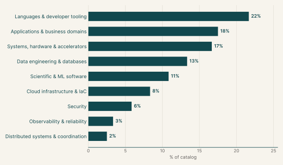
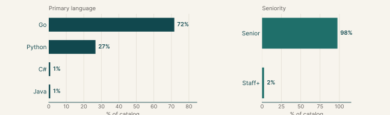
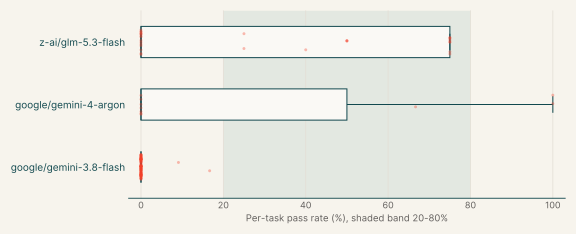
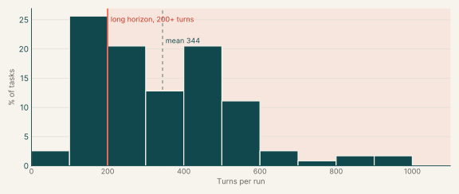
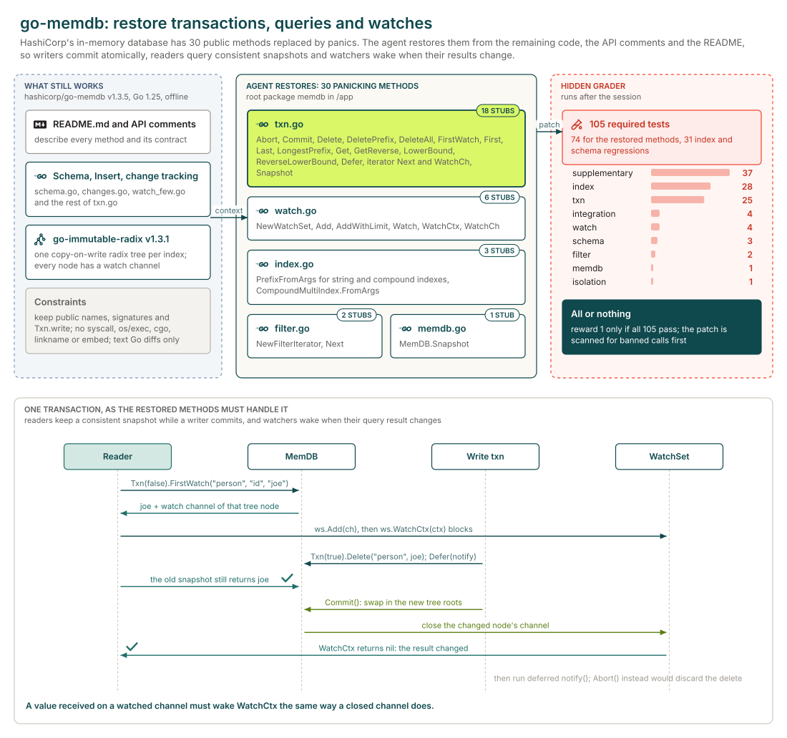
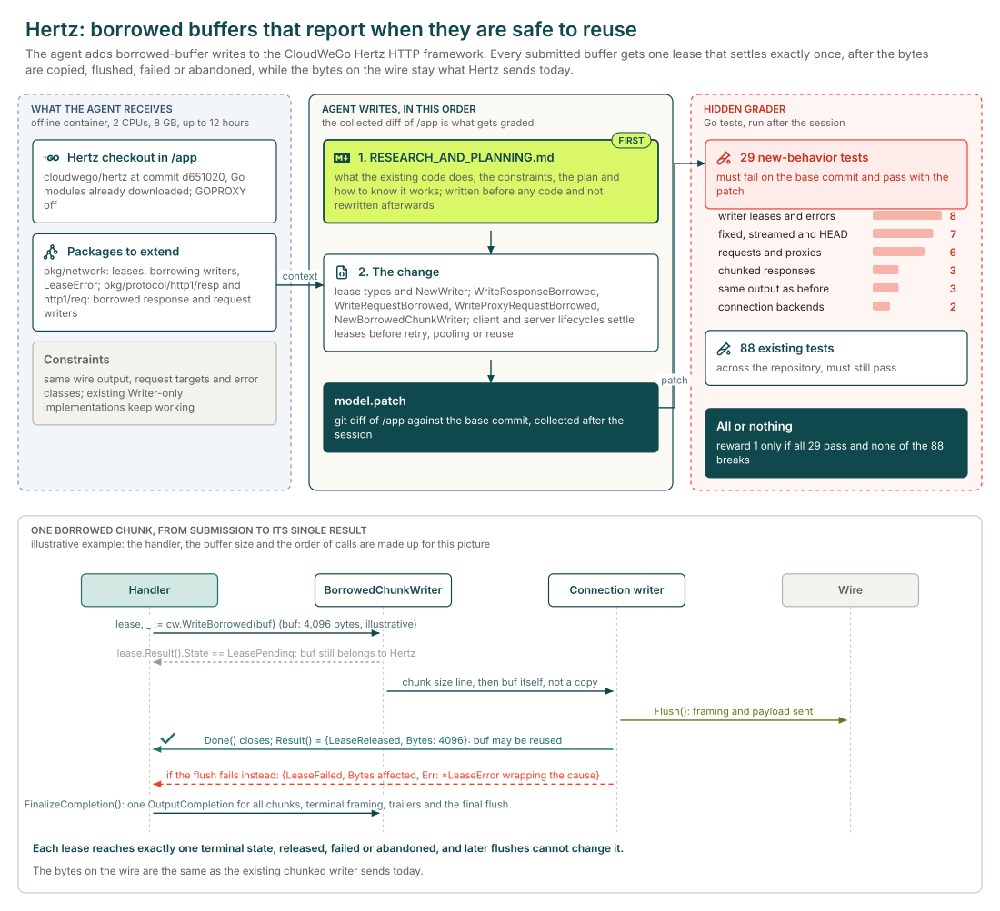

Feature implementation
Executive summary
Each task asks the agent to add a capability to an existing open-source library or service, specified as the public types and functions to deliver, while existing callers see no change. The main languages are Go (71%), Python (27%) and C# (1%).
Every task has graded runs. The model with the most runs here, google/gemini-3.8-flash, has an average reward of <1% over 641 graded runs and scores 0 on every run of 98% of the 100 tasks it ran.
Why this catalog
Problems engineers face
Maintainers add a capability that runs through many code paths of an unfamiliar library or service, while existing callers must see no change. Typical requests add an opt-in mode or policy, keep information the library currently drops, or make a subsystem safe under concurrency and failure.
How the tasks reproduce them
Each task pins an open-source repository, mostly Go or Python, in an offline container and gives a written specification of the new behaviour. The agent's edits are collected as a diff against the base commit. After the session, hidden acceptance tests check the new behaviour and the project's existing tests check that nothing else changed.
Typical prompts
- A capability gap stated as "X cannot Y", then dense paragraphs on the behaviour to add and the behaviour to preserve.
- A bullet list of required exported names, constants and signatures, with a research and plan file due before any code change.
Domain breakdown
The tasks span nine domains. The largest, Languages & developer tooling, makes up 21% of the catalog.
Share of tasks by domain

Language and seniority
Primary language and seniority

Primary language
| Go | 70.9% |
| Python | 27.4% |
| C# | 0.9% |
| Java | 0.9% |
Seniority
| Senior | 97.4% |
| Staff+ | 2.6% |
Model average reward across the catalog
A model's average reward is average@k: on each task, the mean grader score over its graded runs, with partial credit counted as scored; then the mean over the tasks it ran. Runs that errored are left out. Models are listed by number of runs, and a model needs graded runs on five or more tasks for a row.
| google/gemini-3.8-flash | 100 | 641 | <1% | 98% | 0% | 0% |
| z-ai/glm-5.3-flash | 29 | 148 | 29% | 52% | 48% | 0% |
| google/gemini-4-argon | 10 | 21 | 27% | 70% | 10% | 20% |
Per-task average reward by model

Turn counts and long-horizon tasks
A task's turn count is the average over its completed runs, from every model. A task is long horizon when that average is 200 or more turns. 117 of the 117 tasks have a completed run.
| Average turn count | 344.3 |
| Median turn count | 321.7 |
| Range | 92 to 956 |
| Long-horizon tasks (200+ turns) | 72% of tasks |
Turns per task

| google/gemini-3.8-flash | 85% | 344.3 | 68% |
| z-ai/glm-5.3-flash | 25% | 300.6 | 66% |
| google/gemini-4-argon | 9% | 247.4 | 71% |
Sample tasks
Example 1: Databases & storage engines (Go)
| Task id | memdb-txn-ots |
| Final category | Feature implementation |
| Domain | Data engineering & databases |
| Sub-domain | Databases & storage engines |
| Language | Go |
| Seniority | Senior |
| Turn count | 262 (z-ai/glm-5.3-flash), 79 (google/gemini-4-argon) |
| Long horizon | no |
Prompt
Full instruction given to the agent (instruction.md)
I'm restoring transaction and query support in our copy of go-memdb so callers can update data, query snapshots, and watch query results for updates. Could you implement the methods that currently panic in the root memdb package? They live in txn.go, memdb.go, index.go, filter.go, and watch.go. The missing pieces cover transaction lifecycle, deletion, indexed queries and iteration, snapshots, deferred callbacks, filtering, and watch sets.
The existing code, API comments, and README.md provide context for the restoration. A received value must wake WatchCtx just as a closed watched channel does. Please keep the restored public names and signatures unchanged, and retain Txn.write for package compatibility; private helper functions are up to you. I'll check the restored behavior alongside index and schema regressions. Submit text Go source changes without new symbolic links, binary Go diffs, or Go line-position directives (//line and /*line). Use Go filenames that produce unquoted, whitespace-free paths in Git diffs.
In the non-test code you add, please avoid: new init() functions; the syscall, golang.org/x/sys, os/exec, os/signal, plugin, embed, runtime/cgo, runtime/pprof, runtime/trace, testing and flag packages, cgo, and //go:linkname or //go:embed directives; os.Exit, os.StartProcess, os.FindProcess and runtime.Goexit; reading os.Args, os.Executable, /proc/self or runtime/debug build info; caller or stack lookups (runtime.Caller, Callers, CallersFrames, FuncForPC, Stack, debug.Stack, debug.PrintStack, log.Lshortfile, log.Llongfile, and AddSource selectors or identifier keys); literal U+0016 or the text \x16; and printing test-runner lines such as --- PASS. These are rejected outright. Some checks read raw text and also match comments.
Average reward
| google/gemini-4-argon | 3 | 67% |
| z-ai/glm-5.3-flash | 4 | 0% |
Environment
How the task works

Example 2: Networking & HTTP (Go)
| Task id | hertz-buffer-leases |
| Final category | Feature implementation |
| Domain | Systems, hardware & accelerators |
| Sub-domain | Networking & HTTP |
| Language | Go |
| Seniority | Senior |
| Turn count | 284 (google/gemini-4-argon) |
| Long horizon | yes |
Prompt
Full instruction given to the agent (instruction.md)
Hertz cannot accept borrowed buffers while reporting exactly when they are safe to reuse. Add that support to writers, HTTP/1 serialization, and connection lifecycles without changing wire output, request targets, or runtime error classification.
Each built-in writer must give every submission one immutable, ordered terminal result and retain ownership until copying, retention, flush, immediate failure, or abandonment completes. Failures report affected bytes and preserve causes through (e *LeaseError) Error() string and (e *LeaseError) Unwrap() error. Lease-aware fallback must copy input before returning and preserve formatting and flush errors. Existing Writer-only implementations remain valid.
Fixed, suppressed-body, streamed, and chunked responses must aggregate emitted bytes, including framing, trailers, and final flushes. Empty chunks complete with zero-byte ownership and no termination output. Chunk payloads, terminal framing, trailers, and source failures form one ordered completion across unlike backends. Partial server flushes settle completed prefix leases, fail remaining ownership, and preserve error classification.
Direct and proxy requests keep their target forms. Missing-host rejection creates no ownership. Client submission or flush failure settles attempt ownership before retry evaluation; later exchanges cannot change terminal results. Server backend leases settle before keep-alive context reuse. Interrupted streams and connection transfer settle temporary ownership before context recycling. Runtimes settle ownership before retry, pooling, discard, context reuse, or transfer.
WriteResponseBorrowed(resp *protocol.Response, w network.Writer) (network.OutputCompletion, error), WriteRequestBorrowed(req *protocol.Request, w network.Writer) (network.OutputCompletion, error), and WriteProxyRequestBorrowed(req *protocol.Request, w network.Writer) (network.OutputCompletion, error) expose aggregate completion. NewWriter(w io.Writer) Writer and NewBorrowedChunkWriter(r *protocol.Response, w network.Writer) BorrowedChunkWriter provide constructors.
These are required in what you deliver:
- From github.com/cloudwego/hertz/pkg/network: LeaseState, LeaseResult, BufferLease, BorrowingWriter, LeaseError, OutputCompletion, NewWriter.
- LeaseState uint8: LeasePending = iota, LeaseReleased, LeaseFailed, LeaseAbandoned.
- LeaseResult struct: State LeaseState; Bytes int; Err error.
- BufferLease interface: Done() <-chan struct{}; Result() LeaseResult.
- BorrowingWriter interface: Writer; WriteBorrowed(b []byte) (BufferLease, error).
- LeaseError struct: State LeaseState; Bytes int; Err error.
- OutputCompletion interface: Done() <-chan struct{}; Result() LeaseResult.
- From github.com/cloudwego/hertz/pkg/protocol/http1/resp: WriteResponseBorrowed, BorrowedChunkWriter, NewBorrowedChunkWriter.
- BorrowedChunkWriter interface: network.ExtWriter; WriteBorrowed(p []byte) (network.BufferLease, error); FinalizeCompletion() (network.OutputCompletion, error).
- From github.com/cloudwego/hertz/pkg/protocol/http1/req: WriteRequestBorrowed, WriteProxyRequestBorrowed.
Before you edit any code, write your research and your plan to /app/RESEARCH_AND_PLANNING.md. Cover what you learned about the existing code and the constraints that shape the change, then how you intend to carry it out and why, including how you will know it works. Be concrete - the files, names and decisions specific to this codebase, not generalities. Complete the document before you touch any code: it is the record of your up-front investigation and decisions, and it should not be rewritten to match whatever the implementation turns into afterwards. Once it is done, implement the plan.
Average reward
| google/gemini-4-argon | 3 | 0% |
Environment
How the task works
